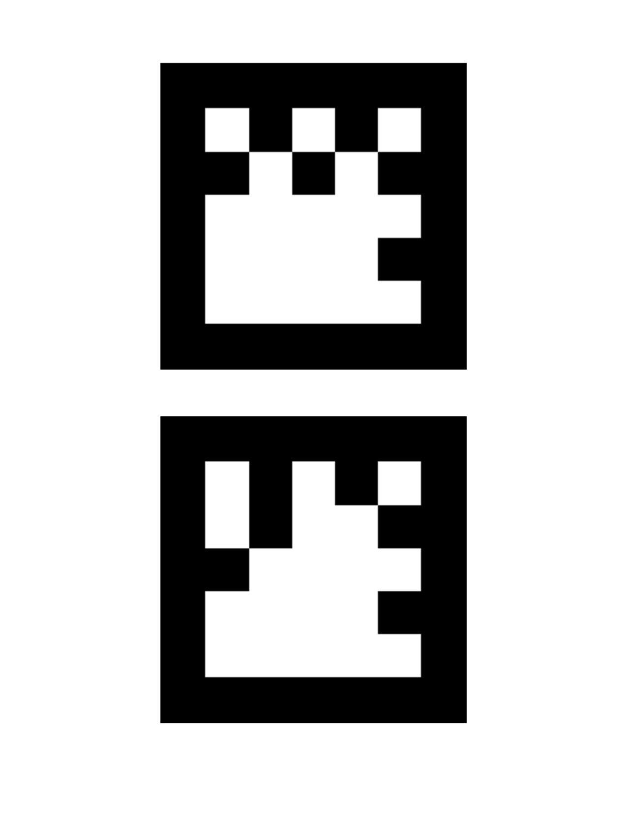

An AR Game is the first place entry for the May 2013 Dev Derby. It is an augmented reality game. The objective is to transport rolling playpieces from a 2D physics world into a 3D space. The game is playable here, and demonstrated here. The objective of this paper is to describe the underlying design and an engineering approach.
Technically the game is a simple coupling of four sophisticated open source technologies. They are: WebRTC, JSARToolkit, ThreeJS, and Box2D.js. This article describes each as we weave them together. We will work in a stepwise fashion, constructing the game as if designing it from the ground up. The code discussed in this article is available on github, with a tag and live link for each tutorial step. Specific bits of summarized source will be referenced in this document, but for unabridged code the reader is directed to the 'diff' links. Videos demonstrating application behaviour are provided where appropriate.
git clone https://github.com/abrie/devderby-may-2013-technical.git
This paper will first discuss the AR panel (realspace), then the 2D panel (flatspace), and conclude with a description of their coupling.
git checkout example_0
live
diff
tag
We will organize our code into modules using RequireJS. The starting point is a main module with two skeletal methods common to games. They are initialize(), invoked startup; and tick(), for every frame. Notice that the gameloop is driven by repeated calls to requestAnimationFrame:
requirejs([], function() {
// Initializes components and starts the game loop
function initialize() {
}
// Runs one iteration of the game loop
function tick() {
// Request another iteration of the gameloop
window.requestAnimationFrame(tick);
}
// Start the application
initialize();
tick();
});
This gives us an application with an empty loop. We will build up from this foundation.
git checkout example_1
live
diff
tag
AR games require a realtime video feed. HTML5's WebRTC provides access to the camera. Thus AR games are possible in modern browsers like Firefox. Good documentation concerning WebRTC and getUserMedia may be found on developer.mozilla.org; and thus will not be repeated in this paper. A camera library is provided in the form of a RequireJS module named webcam.js which we'll incorporate into our example.
First the camera must initialized and authorized. The webcam.js module invokes a callback on user consent. Then for each tick of the gameloop a frame is copied from the video element to a canvas context. This is important because it makes the image data accesible. We'll use it in subsequent sections. For now our application is simply a canvas updated with a video frame at each tick.
git checkout example_2
live
diff
tag
JSARToolkit is an augmented reality engine. It identifies and describes the orientation of fiducial markers in an image. Each marker is uniquely associated with a number. The markers recognized by JSARToolkit are available here as PNG images named according to their ID number. (As of this writing the lack of PNG extension confuses Github...) For this game we will use #16 and #32, consolidated onto a single page:
JSARToolkit found its beginnings as ARToolkit, which was written in C++ at the Univeristy of Washington's HITLab in Seattle. From there it has been forked and ported to number of languages, including Java, and from Java to Flash, and finally from Flash to JS. This ancestry causes some idiosyncrasies and inconsistent names, as we'll see.
Let's take a look at the distilled functionality:
// The raster object is the canvas to which we are copying video frames.
var JSARRaster = NyARRgbRaster_Canvas2D(canvas);
// The parameters object specifies the pixel dimensions of the input stream.
var JSARParameters = new FLARParam(canvas.width, canvas.height);
// The MultiMarkerDetector is the marker detection engine
var JSARDetector = new FLARMultiIdMarkerDetector(FLARParameters, 120);
JSARDetector.setContinueMode(true);
// Run the detector on a frame, which returns the number of markers detected.
var threshold = 64;
var count = JSARDetector.detectMarkerLite(JSARRaster, threshold);
Once a frame has been processed by JSARDetector.detectMarkerLite(), the JSARDetector object contains an index of detected markers. JSARDetector.getIdMarkerData(index) returns the ID number, and JSARDetector.getTransformMatrix(index) returns the spatial orientation. Using these methods is somewhat complicated by history, but we'll wrap them in usable helper methods and call them from a loop like this:
var markerCount = JSARDetector.detectMarkerLite(JSARRaster, 90);
for( var index = 0; index < markerCount; index++ ) {
// Get the ID number of the detected marker.
var id = getMarkerNumber(index);
// Get the transformation matrix of the detected marker.
var matrix = getTransformMatrix(index);
}
Since the detector operates on a per-frame basis it is our responsibility to maintain marker state between frames. For example, any of the following may occur between two succesive frames:
The state tracking is implemented in ardetector.js. To use it we instantiate a copy with the canvas receiving video frames:
// create an AR Marker detector using the canvas as the data source
var detector = ardetector.create( canvas );
And with each tick the canvas image is scanned by the detector, triggering callbacks as needed:
// Ask the detector to make a detection pass.
detector.detect( onMarkerCreated, onMarkerUpdated, onMarkerDestroyed );
As can be deduced from the code, our application now detects markers and writes its discoveries to the console.
git checkout example_3
live
diff
tag
An augmented reality display consists of a reality view overlaid with 3D models. Rendering such a display necessarily consists of two steps. The first is to render the reality view as captured by the camera. In the previous examples we simply copied that image to a canvas. But we want to augment the display with 3D models, and that requires a WebGL canvas. The complication is that a WebGL canvas has no context into which we can copy an image. As a workaround we render a textured plane into the WebGL scene, and as the texture we use images from the webcam. ThreeJS can use a canvas as a texture source, so we can use the canvas which is receiving video frames:
// Create a texture linked to the canvas.
var texture = new THREE.Texture(canvas);
ThreeJS caches textures; therefore each time a video frame is copied to the canvas a flag must be set to indicate that the texture cache should be updated:
// We need to notify ThreeJS when the texture has changed.
function update() {
texture.needsUpdate = true;
}
This results in an application which, from the perspective of a user, is no different than example_2. But behind the scenes it's all WebGL, and it's in need of augmentation.
git checkout example_4
live
diff
tag
movie
We're ready for augmented components: the 3D models aligned to markers captured by the camera. First we must allow the ardector and ThreeJS to communicate, and then we'll be able to build some models to augment the fiducial markers.
Programmers familiar with 3D graphics know that the rendering process requires two matrices: the model matrix (transformation) and a camera matrix (projection). These are supplied by the ardetector we implemented earier, but they cannot be used as is. The reason being that the matrix arrays provided by ardetector are incompatible with ThreeJS. For example, the helper method getTransformMatrix() returns a Float32Array which ThreeJS does not accept. Fortunately the conversion is straightforward and easily done through a prototype extension, also known as monkey patching:
// Allow Matrix4 to be set using a Float32Array
THREE.Matrix4.prototype.setFromArray = function(m) {
return this.set(
m[0], m[4], m[8], m[12],
m[1], m[5], m[9], m[13],
m[2], m[6], m[10], m[14],
m[3], m[7], m[11], m[15]
);
}
This allows us to set the transformation matrix, but in practice we'll find that updates have no effect. This is because ThreeJS caches. To accomodate changes we construct a container object and set the matrixAutoUpdate flag to false. Then for each update to the matrix set matrixWorldNeedsUpdate to true.
Now we'll use our monkey-patches and container objects to display colored cubes as augmented markers. First we make a cube mesh, sized to fit on the fiducial marker: (the dimensions were discovered by trial and error)
function createMarkerMesh(color) {
var geometry = new THREE.CubeGeometry( 100,100,100 );
var material = new THREE.MeshPhongMaterial( {color:color, side:THREE.DoubleSide } );
var mesh = new THREE.Mesh( geometry, material );
//Negative half the height makes the object appear "on top" of the AR Marker.
mesh.position.z = -50;
return mesh;
}
Then enclose the mesh in the container object:
function createMarkerObject(params) {
var modelContainer = createContainer();
var modelMesh = createMarkerMesh(params.color);
modelContainer.add( modelMesh );
function transform(matrix) {
modelContainer.transformFromArray( matrix );
}
}
Then generate marker objects, with each corresponding to a marker ID number:
// Create marker objects associated with the desired marker ID.
var markerObjects = {
16: arobject.createMarkerObject({color:0xAA0000}), // Marker #16, red.
32: arobject.createMarkerObject({color:0x00BB00}), // Marker #32, green.
};
The ardetector.detect() callbacks apply the transformation matrix to the associated marker. For example, here the onCreate handler adds the transformed model to the arview:
// This function is called when a marker is initally detected on the stream
function onMarkerCreated(marker) {
var object = markerObjects[marker.id];
// Set the objects initial transformation matrix.
object.transform( marker.matrix );
// Add the object to the scene.
view.add( object );
}
});
Our application is now a functioning example of augmented reality.
In An AR Game the markers are a bit more complex than colored cubes. They are "warpholes" which appear to go -into- the marker page. The effect requires a bit of trickery, so for the sake of illustration we'll construct the effect in three steps.
git checkout example_5
live
diff
tag
movie
The effect is interesting, but unfinished — and perhaps it is not immediately clear why.
git checkout example_6
live
diff
tag
movie
So what's missing? We need to hide the part of the box which juts from 'behind' the marker page. We'll accomplish this by first enclosing the box in a slightly larger box. This box will be called an "occluder", and in step 3 will become an invisibility cloak. For now we'll leave it visible and color it blue, as a visual aid.
The occluder objects and the augmented objects are rendered into the same context, but are seperate scenes:
function render() {
// Render the reality scene
renderer.render(reality.scene, reality.camera);
// Render the occluder scene
renderer.render( occluder.scene, occluder.camera);
// Render the augmented components on top of the reality scene.
renderer.render(virtual.scene, virtual.camera);
}
This blue jacket doesn't contribute much to the "warphole" illusion, yet.
git checkout example_7
live
diff
tag
movie
The illusion requires that the blue jacket be invisible while retaining its occluding ability --- it should be an invisible occluder. The trick is to deactivate the color buffers, thereby rendering only to the depth buffer. The render() method now becomes:
function render() {
// Render the reality scene
renderer.render(reality.scene, reality.camera);
// Deactivate color and alpha buffers, leaving only depth buffer active.
renderer.context.colorMask(false,false,false,false);
// Render the occluder scene
renderer.render( occluder.scene, occluder.camera);
// Reactivate color and alpha buffers.
renderer.context.colorMask(true,true,true,true);
// Render the augmented components on top of the reality scene.
renderer.render(virtual.scene, virtual.camera);
}
And that's a much more convincing illusion.
git checkout example_8
live
diff
tag
An AR Game allows the user select which warphole to open by positioning the marker underneath a targeting reticule. This is a core aspect of the game, and it is technically known as object picking. ThreeJS makes this a fairly simple thing to do. The key classes are THREE.Projector() and THREE.Raycaster(), but there is a caveat: despite a method name of Raycaster.intersectObject(), it actually takes a THREE.Mesh as the parameter. Therefore we add a mesh named "hitbox" to createMarkerObject(). In our case it is an invisible geometric plane. Note that we are not explicitly setting a position for this mesh, leaving it with the default of (0,0,0) relative to the markerContainer object. This places it at the mouth of the warphole object, in the plane of the marker page. Which is where the face we removed would be if we didn't remove it.
Ready with a testable hitbox, we make a class called Reticle to handle intersection detection and state tracking. Reticle notifications are incorporated into the arview by including a callback when we arivew.add() an object. This callback will be invoked whenever the object is selected, for example:
view.add( object, function(isSelected) {
onMarkerSelectionChanged(marker.id, isSelected);
});
The player is now able to select augmented markers by positioning them at the center of the screen.
git checkout example_9
live
diff
tag
Our augmented reality functionality is essentially complete. We are able to detect markers in webcam frames and align 3D objects with them. We can also detect when a marker has been selected. We're ready to move on to the second key component of An AR Game: the flat 2d space from which the player transports playpieces. This will require a fair amount of code, and some preliminary refactoring would help keep everything neat. Notice that a lot of AR functionality is currently in the main application.js file. Let's excise it and place it into a dedicated module named realspace.js, leaving our application.js much cleaner.
git checkout example_10
live
diff
tag
In An AR Game the player's task is to transfer playpieces from a 2D plane to a 3D space. The realspace module implemented earlier serves as the the 3D space. Our 2D plane will be managed by a module named flatspace.js, which begins as a skeletal pattern. The skeleton shares symmetry between that of application.js and realspace.js.
git checkout example_11
live
diff
tag
The physics of the realspace view comes free with nature. But the flatspace pane uses simulated 2D physics, and that requires physics middleware. We'll use a javascript transpilation of the famous Box2D engine named Box2D.js. The javascript version is born from the original C++ via LLVM processed by emscripten.
Box2D is a rather complex piece of software, but well documented and well described. Therefore this paper will, for the most part, refrain from repeating what the reader presumably knows. We will instead describe the common issues encountered when using Box2D, introduce a solution in the form of a module, and describe its integration into flatspace.js.
First we build a wrapper for the raw Box2D.js world engine and name it boxworld.js. This is then integrated into flatspace.
This does not yield any outwardly visible affects, but in reality we are now simulating an empty space.
It would helpful to be able to see what's happening. Box2D thoughtfully provides debug rendering, and Box2D.js facilitates it through something like virtual functions. The functions will draw to a canvas context, so we'll need to create a canvas and then supply the VTable with draw methods.
git checkout example_12
live
diff
tag
The canvas will map a Box2D world. A canvas uses pixels as its unit of measurement, whereas Box2D describes its space using meters. We'll need methods to convert between the two, by using a pixel-to-meter ratio and aligning the coordinate origins. The conversion methods use these constants to convert from pixels to meters, and from meters to pixels. The conversion methods are associated with a canvas and all are wrapped into the boxview.js module. This makes it easy to incorporate it into flatspace:
It is instaniated during initialization, and its canvas added to the DOM:
view = boxview.create({
width:640,
height:480,
pixelsPerMeter:13,
});
document.getElementById("flatspace").appendChild( view.canvas );
There are now two canvases on the page ‐ the flatspace and the realspace. A bit of CSS in application.css puts them side-by-side:
#realspace {
overflow:hidden;
}
#flatspace {
float:left;
}
git checkout example_13
live
diff
tag
customizeVTable() method, and subsequently invoked by b2World.DrawDebugData(). We'll take the draw methods from kripken's description, and wrap them in a module called boxdebugdraw.js.
Now we can draw, but have nothing to draw. We need to jump through a few hoops first.
git checkout example_14
live
diff
tag
Let's liven up the simulation with some creation. Box2D Body construction is somewhat verbose, involving fixtures and shapes and technical parameters. So we'll stow our body creation methods in a module named boxbody.js. To create a body we pass a a boxbody method to boxworld.add(). For example:
function populate() {
var ball = world.add(
boxbody.ball,
{
x:0,
y:8,
radius:10
}
);
}
This yields an undecorated ball in midair experiencing the influence of gravity. Under contemplation it may bring to to mind a particular whale.
git checkout example_15
live
diff
tag
We must be able to keep track of the bodies populating flatworld. Box2D provides access to a body list, but it's a bit too low level for our purposes. Instead we'll use a field of b2Body named userData. To it we assign a unique ID number subsequently used as an index to a registry of our own design. It is implemented in boxregistry.js, and is a key aspect of the flatspace implementation. It enables the association of bodies with decorative entities (such as sprites), simplifies collision callbacks, and facilitates the removal of bodies from the simulation. The implementation details won't be described here, but interested readers are referred to repo to see how the registry is instantiated in boxworld.js, and how the add() method returns wrapped-and-registered bodies.
git checkout example_16
live
diff
tag
Box2D collision detection is complicated because the native callback simply gives two fixtures, raw and unordered. And any collisions that occur in the world are reported, making for a lot of conditional checks. The boxregistry.js module avails itself to managing the data overload. Through it assign an onContact callback to registered objects. Then when a Box2D collision handler is triggered we query the registry for the assocated objects and check for the presence of a callback. If the object has a defined callback then we know its collision activity is of interest. So to use this functionality in flatspace.js, we simply need to assign a collision callback to a registered object:
function populate() {
var ground = world.add(
boxbody.edge,
{
x:0,
y:-15,
width:20,
height:0,
}
);
var ball = world.add(
boxbody.ball,
{
x:0,
y:8,
radius:10
}
);
ball.onContact = function(object) {
console.log("The ball has contacted:", object);
};
}
git checkout example_17
live
diff
tag
Removing bodies is complicated by the fact that Box2D does not allow calls to b2World.DestroyBody() while within b2World.Step(). This is significant because usually you'll want to delete a body because of a collision, and collision callbacks occur during a simulation step. Conundrum. One solution is to queue bodies for deletion, then process the queue outside of the simulation step. The boxregistry addresses the problem by furnishing a flag, isMarkedForDeletion, for each object. The collection of registered objects is iterated and listeners are notified of the deletion request. The iteration happens after a simulation step, so the deletion callback cleanly destroys the bodies. Perceptive readers may notice that we now check the isMarkedForDeletion flag before invoking collision callbacks.
This happens transparently as far as flatspace.js is concerned, so all we need to do is set the deletion flag for a registered object:
ball.onContact = function(object) {
console.log("The ball has contacted:", object);
ball.isMarkedForDeletion = true;
};
Now the body is deleted on contact with the ground.
git checkout example_18
live
diff
tag
When a collision is detected An AR Game needs to know what the object has collided with. To this end we add an is() method for registry objects, used for comparing objects. We will now add a conditional deletion to our game:
ball.onContact = function(object) {
console.log("The ball has contacted:", object);
if( object.is( ground ) ) {
ball.isMarkedForDeletion = true;
}
};
git checkout example_19
live
diff
tag
We've already discussed the realspace warpholes, and now we'll implement their flatspace counterparts. The flatspace warphole is simply a body consisting of a Box2D sensor. The ball should pass over a closed warphole, but an open warphole causes the ball to be sent to another dimension. Now imagine an edge case where a ball is over a closed warphole which is then opened up. The problem is that Box2D's onBeginContact handler behaves true to its name, meaning that we detected warphole contact during the closed state but have since opened the warphole. Therefore the ball is not warped, and we're left with a bug. Our fix is to use a cluster of sensors. With a cluster we are more sure that as a ball moves over the body at least one sensor will trigger an onBeginContact. Thus we can be confident that opening a warphole while the ball is over it will result in a warp. The sensor cluster generator is named hole and implemented in boxbody.js. The generated cluster looks like this:
At this point we've made usable modules of JSARToolkit and Box2D.js. We've used them to create warpholes in realspace and flatspace. The objective of An AR Game is to transport pieces from flatspace to the realspace, so it is necessary that the warpholes communicate. Our approach is as follows:
git checkout example_20
live
diff
tag
Notify the application when a realspace warphole's state changes.
git checkout example_21
live
diff
tag
Set flatspace warphole states according to realspace warphole states.
git checkout example_22
live
diff
tag
Notify the application when a ball transits an open flatspace warphole.
git checkout example_23
live
diff
tag
Add a ball to realspace when the application receives a notification of a transit.